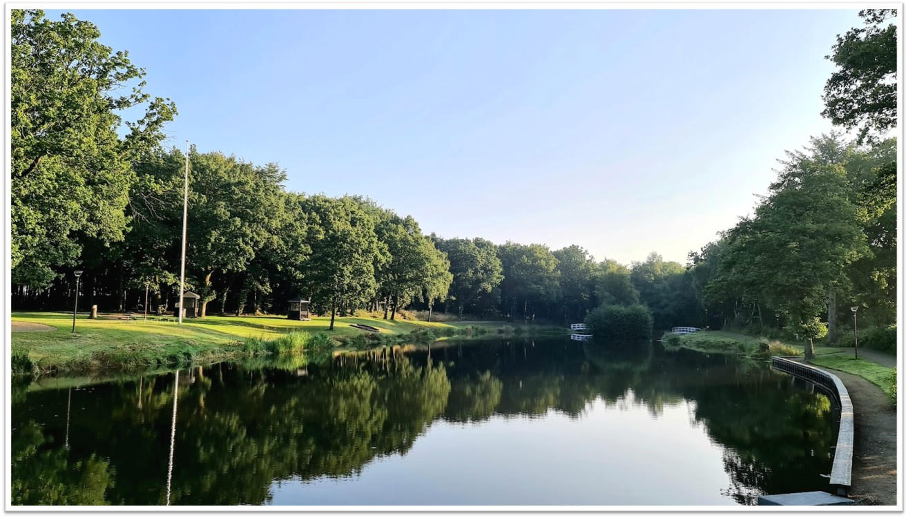
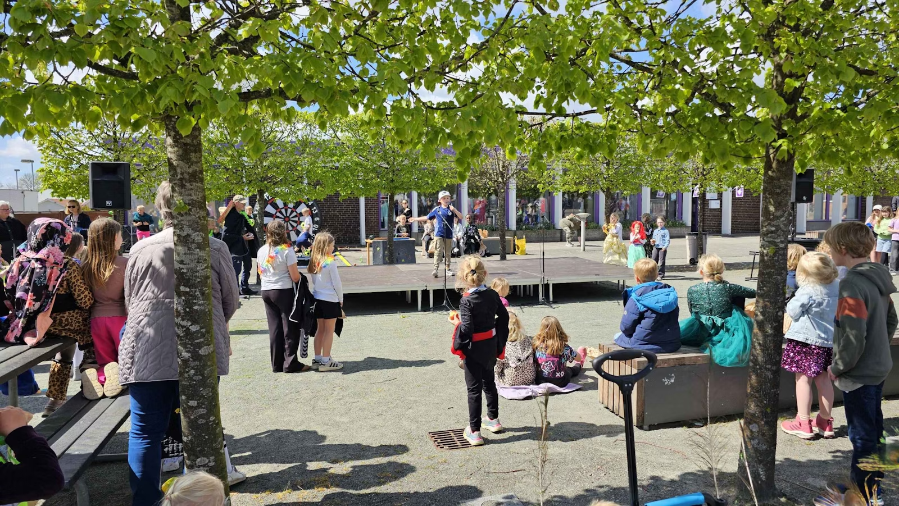
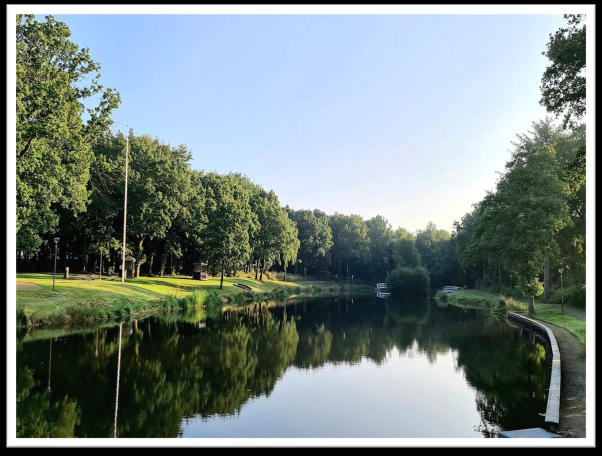
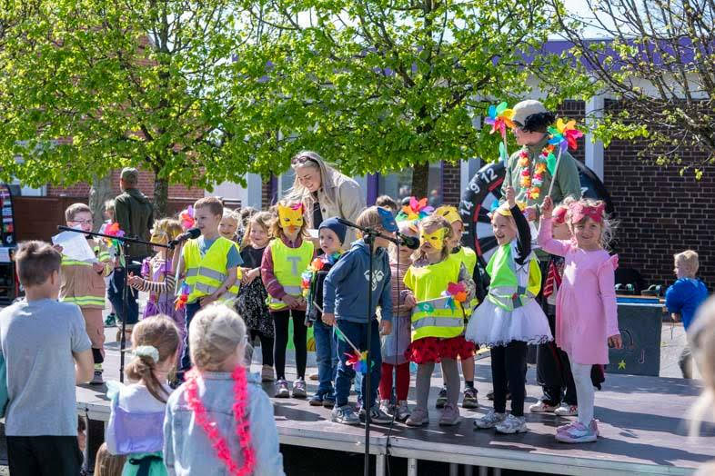
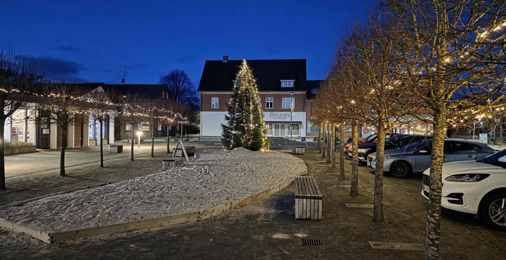
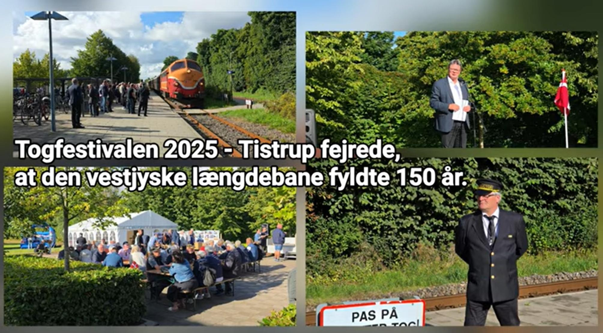
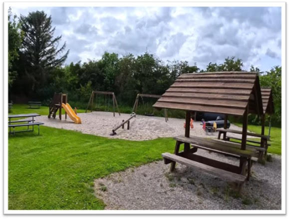

En lille by med et stort hjerte.
Tistrup ligger midt mellem Varde og Ølgod — en af de større landsbyer i Sydvestjylland med cirka 1.400 indbyggere. Vi har skole, børnehave, kirke, plejecenter, Dagli'Brugsen, Hodde-Tistrup Hallen og et lille, aktivt handelsliv på torvet.
Tistrup blev stationsby i 1875. I 2025 fejrede vi 150-års jubilæet med en stor Tog Festival.

Foreningens formål er at fremme Tistrup By og oplands interesser – og således styrke sammenholdet.
Den der passer på anlægget, når ingen andre kigger.
Vi ejer og plejer Tistrup Anlæg med søen, de hvide broer og legepladsen. Vi driver By-skoven, vedligeholder stadionanlægget, og står bag Midsommerfest, Jul i Tistrup, valgaften og en række andre arrangementer.
Alt sammen drevet af frivillige kræfter – og finansieret af medlemmernes kontingent.






Hvad sker der i Tistrup?
De fleste nyheder lægger vi på Facebook.
I gruppen Vores Tistrup Hodde deler vi opslag, arrangementer og nyt fra bestyrelsen. Gruppen er offentlig – alle kan kigge med.
Er du ikke på Facebook? Så hold øje med opslag i byen, flyers og plakatsøjler – eller ring til formanden.
Støt byen — 500 kr. pr. husstand om året.
Hver krone bliver i Tistrup. Kontingentet går til anlægget, byskoven, julelys, Midsommerfest og alt det andet, der gør byen levende.
Bliv medlem